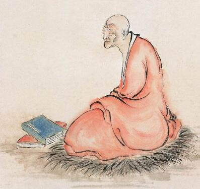

大历二年，莲宗四祖法照大师居住在衡州云峰寺，勤修不懈。有一天，他在斋堂粥钵中，看见五色祥云，云内显现山寺，寺的东北方有山，山下有溪涧，溪涧的北边有石门，门内有一座寺院，扁额写上“大圣竹林寺”。
隔了不久，他又在钵中看见云中有好几座寺院，水池、阳台、楼阁及数万尊
大历四年，法照大师在衡州湖东寺开创
法照大师就跟数位同学，不辞遥远，朝五台山前进。大历五年四月六日，他们来到五台县
那个地方，有庄严的金地和宝树来做陪衬。走进寺里，进了讲堂，看见
文殊菩萨回答：“你现在
法照大师问：“应当怎么念呢？”
文殊菩萨说：“这世界的西边，有一尊阿弥陀佛，他的愿力非常不可思议，你就当净念相继而不要间断，临命终时，决定往生极乐
说完，文殊和普贤菩萨同时伸展金色的手臂，摩著法照大师的头顶，并且说：“你因为念佛，不久会证得无上智慧。如果有善男信女，想要疾速成佛和证得无上智慧，没有比念佛更快的了！”
法照大师
四月十三日，法照大师与五十余位僧人一齐到金刚窟，虔诚地礼拜三十五佛的名号。法照大师才礼拜了十遍，忽然看见他所在的地方，现出广大庄严、清净的琉璃宫殿，文殊和普贤菩萨也都在一起。他又独自来到金刚窟，发愿亲睹文殊菩萨，当他五体投地礼拜时，看见印度僧人
法照大师虽然看见了许多灵异的事迹，可是他从未告诉别人，那年的十二月，他在华严寺的念佛道场，绝食念佛，发誓一定要往生净土。到了十二月七日的初夜，正当他在念佛时，他看见一位梵僧来到道场，并且对他说：“你所见的五台山境界，何不写下来告诸世人呢？”那位梵僧说完，就不见了。法照大师心中也感到讶异。
翌日，他又同样看见那位梵僧。法照大师说：“我不敢隐密圣道，只是恐怕引起毁谤而已！”
梵僧回答：“像文殊菩萨这么伟大的
于是法照大师回忆自己所见的境界，并且写下来流传
第二天，江东的慧从法师与华严寺的许多
后来，在曾幻化《竹林寺》扁额的地方，建了一座寺院，仍然以“竹林”为名。于是法照大师更加专心念佛，日夜不断。有一天，他忽然看见佛陀波利告诉他：“你的莲华已经完成，三年后莲花就开了！”
三年后，法照大师告诉大众说：“我要走了！”说完，端坐而逝。
有人说：法照大师曾经在并州创立“五会念佛”。代宗时，皇上请他入京师，教宫里的人念佛，也是有五会，所以大家都尊称他“五会法师”。